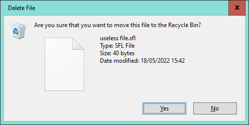
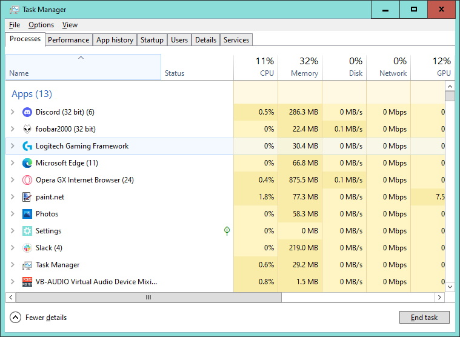
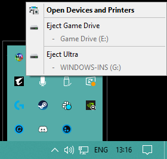

Maintaining Your System
Performing system maintainence tasks can seem like a bit of a chore but is very much essential to increasing the lifespan of your equipment. Thankfully not all tasks are difficult or time consuming and a few of them can be set up to be performed automatically. In most cases it is recommended to perform these tasks once very 1 or 2 weeks. Remember you can use shortcuts to help shave of a bit of extra time.

Clearing away old files not only helps free space on your hard drive but can help it perform faster.
Task Manager
The Windows task manager is a very powerful tool that allows you to view what processes are running on your system, and end them at the click of a button. You can also view system performence, app history and a list of services or startup tasks. It can be opened using a keyboard shortcut or by entering taskmgr.exe in the run prompt. By default it will open a simplified view where it lists your running apps that you can close. Clicking on 'More details' at the bottom left will switch it to the advanced view. This will show all apps and background processes running, as well as showing how much of your system reasources are being used by each one. Stopping non-essential apps that take up a lot of 1 or more of your system reasources can result in a faster running system.

Task manager shows CPU, memory, GPU, disk, network and power usage.
Backup your files!
This is something you may hear a lot, but why do it? Isn't saving often enough? Unfortunatly no matter how well you maintain your system, there will come a point where it starts to fail. If your hard drive is the part to fail then you can potentially lose all of the data contained on it, no matter how many saves you did. Because of this it is recommended to have at least 1 backup location. This can be either another drive or you can use cloud storage to access these files from anywhere in the world at any point. For cloud backup there are a few options, some of which come with software that allow certain folders to automatically sync and backup to the cloud. I would recommend that you keep sensitive or confidential stuff on a phsyical drive for extra security.

Don't forget to safely remove any USB or external hard drives before disconnecting it.